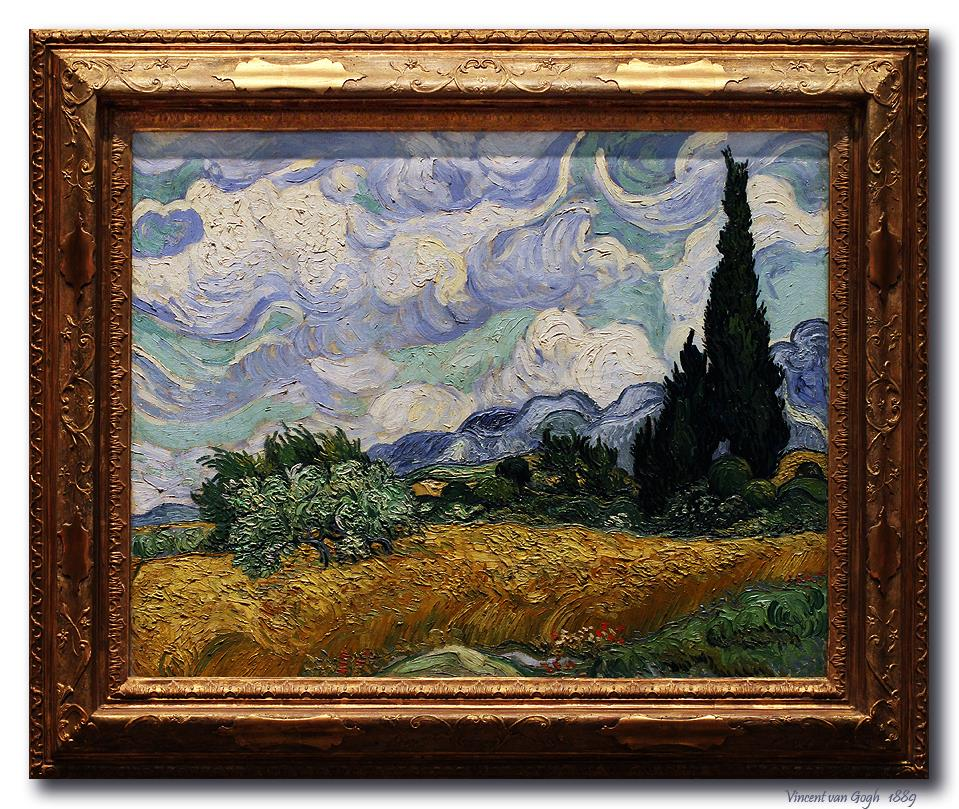
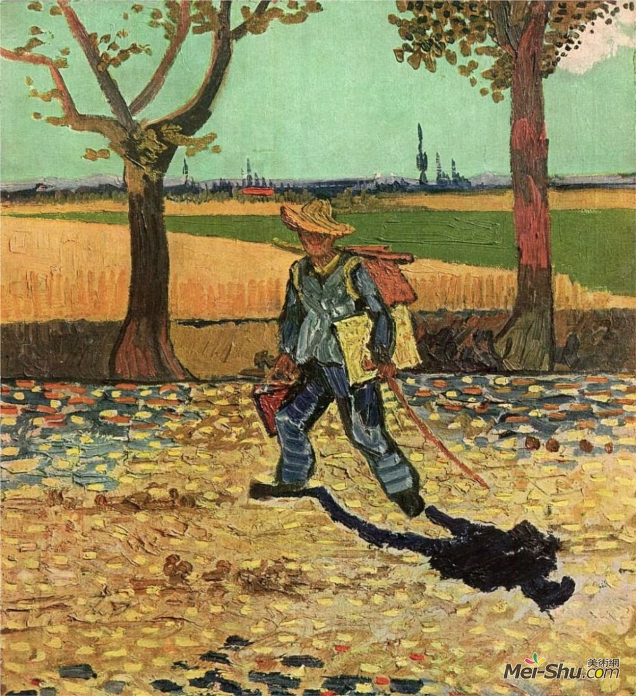

实例演示了 fadeToggle() 使用了不同的 speed(速度) 参数。

《麦田与柏树》是画家梵高创作于1889年9月初的一幅风景油画。现存于伦敦国家画廊。油画中那随风摇晃的柏树犹如擅动的灵魂，在大地和天空之间飞舞，那是灵魂深处的唿喊，那是对生活的渴望，那是对现实的无奈和悲痛欲绝。画家梵高一直想要表达的主题，就是生命与力量、梵高的作品总是充满压抑不住的·激动和热情，他经常运用飞舞的线条和强烈的色彩来抒发这种激情。在这幅画里道路旁的柏树就像黑色的火焰，这些卷曲着的线条相互扭结着窜向天空。柏树旁是一片金色耀眼的麦田，这是梵高最喜爱的色彩，因为它是太阳的色彩，生命的象征。梵高还用一种短促急速和旋转的线条，把天空和道路描绘成永不休止、滚滚向前的湍急河流。这些色彩和笔触表达出梵高内心的紧张和冲动，即使相当理智的人，也很难在这幅画前保持平静的心情。梵高的画并不深奥，也没有故作惊人之举，他只是用一种单纯平易的艺术语言，直抒他对自然和生命的热爱之情。正是这种亲切和真诚，使他的艺术具有经久不衰的魅力
麦田与柏树》1889

梵高认为“对我而言工作是一种绝对的需要，我不能够扔下它；我一旦卷入其他事务之中，欢乐便会立刻逃遁；我必须工作，用技能来工作，我必须沉浸在我的工作中，彻底地忘记自己，否则忧郁会将我击溃”；我觉得，职业和爱好相合的人，是幸福的；而能将职业变成爱好，必将成功。
梵高(Van Gogh)写生途中自画像
梵高当年在阿尔勒描绘的这家咖啡馆如今依然矗立在拉马丁广场。梵高抵达阿尔勒后，一直住在这里，后来怀着建造艺术家聚居地的希望，搬入黄房子，与高更共同生活了两个月。 梵高阿尔勒时期的作品，总令人充满阳光的明亮的风景画，其实他受夜景刺激而绘画作亦为数不少。 这幅右下角有着梵高签名的画作描绘的是室内的咖啡馆的场景，处在画面中间位置的门帘半开半掩着，据推测门后面有很多独立的小房间。五位顾客沿着墙坐在左右两侧，服务员站在灯光下面面对着观众，在他一侧房间中间部位一有张台球桌。 画面中的五位顾客被描述成喝醉酒在昏昏欲睡的流浪汉以及妓女和嫖客，有学者说咖啡馆是穷困潦倒的人和妓女夜间出没的场所，这在画面远处的角落里得以体现。